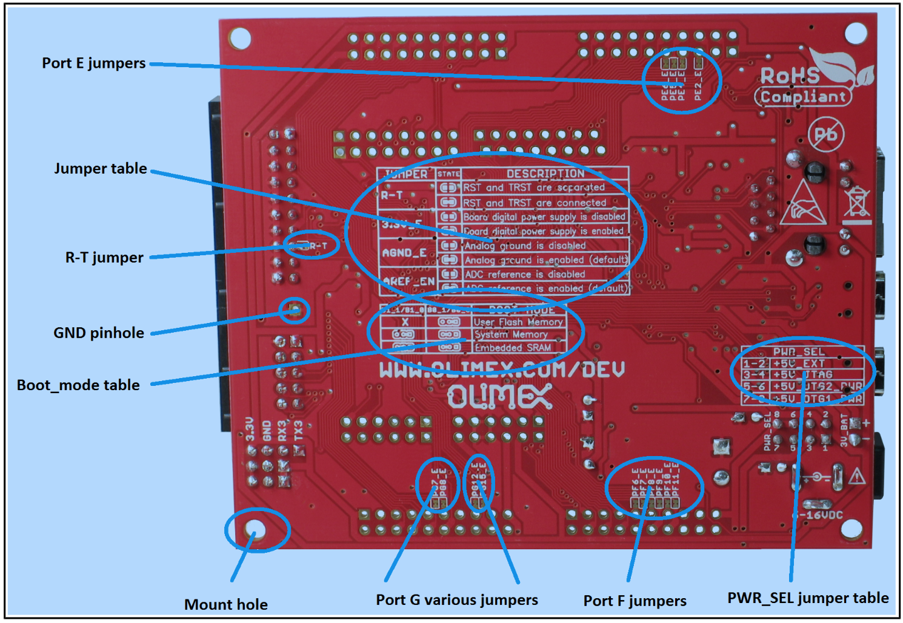
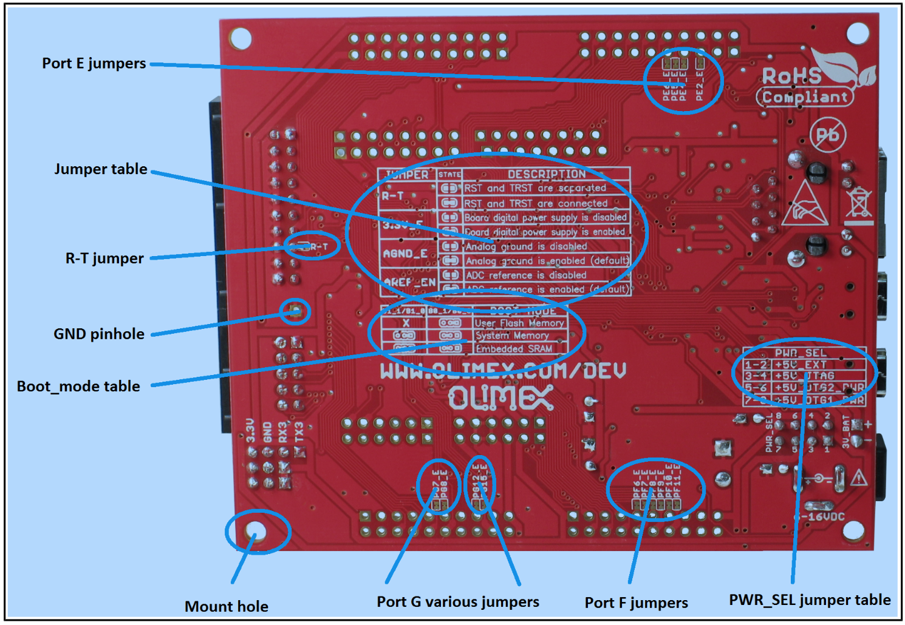

Introduction to Mynewt - test
We want to make it very simple for an application developer to develop and release application programs on an embedded device of their choice. With that in mind, we offer a complete suite of open-source software ranging from an operating system to network protocol stacks. We offer the user of our wares the flexibility to choose hardware component(s) and easily build a software platform for it with desired features and performance.
We invite you to join us in our efforts to develop the ecosystem of firmware, software, and tools needed to offer the higher level of abstraction to various developers to enable them to be more productive and to decrease the time to market their applications on the embedded devices of their choosing.
Basic components in the ecosystem
NewtOS is an open-source RTOS (Real Time Operating System) that is not tied to any particular hardware but can be tuned to the hardware component mix of the user's choosing. It has support for multitasking, synchronization of tasks, scheduling and buffering of operations, memory management,file systems, networking, security, power management, and other advanced features. Naturally, it involves several packages such as the Core RTOS, a flash file system, utility functions, a variety of board support packages, packages of microcontrollers etc.
Network protocol stacks such as Bluetooth Low Energy, and more
Newt Tool helps you mix the specific packages for the combination of hardware and low-level embedded architecture features of the user's choice and generate the corresponding run-time image based on the NewtOS. It provides the infrastructure to manage and build for different CPU architectures, memory units, board support packages etc., allowing a user to formulate the contents according to the low-level features needed by his or her project.
Terminology
In the mynewt lifecycle, a project grows in a nest. A nest may house multiple projects. The nest is, therefore, a repository where various component packages for one or more projects reside. Each package is an egg, naturally. However, an egg may consist of other eggs!
A nest can be given any name. You will see a nest named "tadpole" in mynewt. It contains all the core libraries of the operating system for distribution. Each of these directories contain one or more eggs where an egg is a basic unit of implementation of any aspect of the RTOS.
- libs/os: The core RTOS which ports to all supported chip platforms.
- hw/hal: The hardware abstraction layer (HAL) API definitions that all BSP and MCU implementations must support
- hw/mcu/native: A MCU implementation for the native platform
- hw/bsp/native: A BSP implementation for the native platform
- compiler/native: The definition of compiler support for the native platform.
Each of the above directories contain one or more eggs where an egg is a basic unit of implementation of any aspect of the RTOS. For example, the libs/os directory holds eggs such as the bootloader, flash file system, the kernel for process/thread/memory management, tools for testing etc. The hw/hal directory holds an egg that provides abstraction for physical hardware components such as GPIO (general purpose input/output), network adapters, timers, and universal asynchronous receiver-transmitters (UARTs). All these physical interfaces are defined in various header files in hw/hal, and are designed to make device driver specification simpler.
You can see another nest in the mynewt ecosystem called the "larva". It was spawned from the "tadpole" nest using the newt tool. Spawning is easy - $ newt create nest <your_nest_name>. "larva" is the developer's test repository containing all sorts of eggs being incubated, including ones to enhance the core operating system which should eventually make their way into the "tadpole" nest. There is a hatch_tadpole script to update the "tadpole" nest when the core OS related eggs in "larva" are ready.
There is a third nest named "newt" that contains all the eggs needed to support the build and release process of mynewt software.
There will also be pre-built nests for certain common hardware devices to enable a user to quickly get started with a project.
A Mynewt contributor
A contributor can choose to work on any area(s) of the Mynewt endeavor that appeals to him or her. Hence, you can work on one or more eggs or an entire nest. You can create your own nest (master) or create a branch in an existing nest. For now, Runtime contributors will review any new areas of support that you may wish to introduce e.g. a new board support package (BSP) or a new network protocol.
A contributer role necessarily implies he or she is a Mynewt user (see below) of some or all of the products developed.
A Mynewt user
An application developer is interested only in using software available in this ecosystem to build a top level build artifact. He or she may either:
- Use a pre-built nest, or
- Spawn a new nest using the newt tool for a target where a target is a custom combination of supported hardware components
In either case, the user would use the newt tool to create and set the target in the chosen nest. The newt tool would then be used to build out the target profile which would determine which eggs to choose. Finally, the user would use the newt tool to generate a run-time image that can be run on the device.
Getting Started - Project Blinky
We will show you how you can use eggs from a nest on Mynewt to make an LED on a target board blink. We will call it Project Blinky. The goals of this tutorial are threefold:
- First, you will learn how to set up your environment to be ready to use the various eggs that you will download from Mynewt.
- Second, we will walk you through a download of eggs for building and testing on a simulated target.
- Third, you will download eggs and use tools to create a runtime image for a board to make its LED blink.
If you want to explore even further, you can try to upload the image to the board's flash memory and have it boot from flash!
What you need
- STM32-E407 development board from Olimex.
- ARM-USB-TINY-H connector with JTAG interface for debugging ARM microcontrollers (comes with the ribbon cable to hook up to the board)
- USB A-B type cable to connect the debugger to your personal computer
- Personal Computer
The instructions assume the user is using a Bourne-compatible shell (e.g. bash or zsh) on your computer. You may already have some of the required packages on your machine. In that
case, simply skip the corresponding installation step in the instructions under Getting your Mac Ready or Getting your Ubuntu machine Ready or Getting your Windows machine Ready. While the given instructions should work on other versions, they have been tested for the three specific releases of operating systems noted here:
- Mac: OS X Yosemite Version 10.10.5
- Linux: Ubuntu 14.10 (Utopic Unicorn)
- Windows: Windows 10
Getting your Mac Ready
Getting an account on GitHub
- Get an account on GitHub. Make sure you have joined the "Newt Operating System" organization.
Installing Homebrew to ease installs on OS X
Do you have Homebrew? If not, open a terminal on your Mac and paste the following at a Terminal prompt. It will ask you for your sudo password.
$ ruby -e "$(curl -fsSL https://raw.githubusercontent.com/Homebrew/install/master/install)"
Alternatively, you can just extract (or git clone) Homebrew and install it to /usr/local.
Creating local repository
The directory structure must be first readied for using Go. Go code must be kept inside a workspace. A workspace is a directory hierarchy with three directories at its root:
src contains Go source files organized into packages (one package per directory),
pkg contains package objects, and
bin contains executable commands.
The GOPATH environment variable specifies the location of your workspace. First create a 'dev' directory and then a 'go' directory under it. Set the GOPATH environment variable to this directory and then proceed to create the directory for cloning the newt tool repository.
$ cd $HOME
$ mkdir -p dev/go
$ cd dev/go
$ export GOPATH=`pwd`
Note that you need to add export statements to ~/.bash_profile to export variables permanently.
$ vi ~/.bash_profile
The next step is to set up the repository for the package building tool "newt" on your local machine. First create the appropriate directory for it and then clone the newt tool repository from github.com into this newly created directory. Check the installation.
$ mkdir -p $GOPATH/src/github.com/mynewt
$ cd $GOPATH/src/github.com/mynewt
$ git clone https://github.com/mynewt/newt.git
$ ls
newt
$ cd newt
$ ls
Godeps README.md coding_style.txt newt.go
LICENSE cli design.txt
Installing Go and Godep
Next you will use brew to install go. The summary message at the end of the installation should indicate that it as installed in the /usr/local/Cellar/go/ directory. Use the go command 'install' to compile and install packages and dependencies. Also set the GOROOT environment variable to /usr/local/Cellar/go as that is the root of the brewed go directory structure. Again, to make the export variable permanent, add it to your ~/.bash_profile and ~./bashrc files.
$ brew install go
==>
==>
==> *Summary*
🍺 /usr/local/Cellar/go/1.5.1: 5330 files, 273M
$ cd $GOPATH/src/github.com/mynewt/newt
$ export GOROOT=/usr/local/Cellar/go
Alternatively, you can download the go package directly from (https://golang.org/dl/) instead of brewing it. Install it in /usr/local directory and set GOROOT to /usr/local/go as that is now the root of the go directory structure.
Now you will get the godep package. Return to the go directory level and get godep. Check for it in the bin subdirectory. Add the go environment to path. Make sure it is added to your .bash_profile.
$ cd $GOPATH
$ go get github.com/tools/godep
$ ls
bin pkg src
$ ls bin
godep
$ export PATH=$PATH:$GOPATH/bin
Use the go command 'install' to compile and install packages and dependencies. In preparation for the install, you may use the godep command 'restore' to check out listed dependency versions in $GOPATH and link all the necessary files. Note that you may have to go to the ~/dev/go/src/github.com/mynewt/newt directory to successfully run the restore command (e.g. on certain distributions of Linux). You may also have to do a go get before the restore to make sure all the necessary packages and dependencies are correct.
$ cd ~/dev/go/src/github.com/mynewt/newt
$ go get
$ ~/dev/go/bin/godep restore
$ go install
Building the Newt tool
- You will now use go to run the newt.go program to build the newt tool. You will have to use
go build command which compiles and writes the resulting executable to an output file named newt. However, it does not install the results along with its dependencies in $GOPATH/bin (for that you will need to use go install). Now try running newt using the compiled binary. For example, check for the version number by typing 'newt version'. See all the possible commands available to a user of newt by typing 'newt -h'.
Note: If you are going to be be modifying the newt tool itself often and wish to compile the program every time you call it, you may want to store the command in a variable in your .bash_profile. So type in export newt="go run $GOPATH/src/github.com/mynewt/newt/newt.go" in your .bash_profile and execute it by calling $newt at the prompt instead of newt. Don't forget to reload the updated bash profile by typing source ~/.bash_profile at the prompt! Here, you use go run which runs the compiled binary directly without producing an executable.
$ go run %GOPATH%/src/github.com/mynewt/newt/newt.go
$ cd ~/dev/go/src/github.com/mynewt/newt
$ ls
Godeps README.md coding_style.txt newt
LICENSE cli design.txt newt.go
$ newt version
Newt version: 1.0
$ newt -h
Newt allows you to create your own embedded project based on the Mynewt
operating system. Newt provides both build and package management in a
single tool, which allows you to compose an embedded workspace, and set
of projects, and then build the necessary artifacts from those projects.
For more information on the Mynewt operating system, please visit
https://www.github.com/mynewt/documentation.
Please use the newt help command, and specify the name of the command
you want help for, for help on how to use a specific command
Usage:
newt [flags]
newt [command]
Examples:
newt
newt help [<command-name>]
For help on <command-name>. If not specified, print this message.
Available Commands:
version Display the Newt version number.
target Set and view target information
egg Commands to list and inspect eggs on a nest
nest Commands to manage nests & clutches (remote egg repositories)
help Help about any command
Flags:
-h, --help=false: help for newt
-l, --loglevel="WARN": Log level, defaults to WARN.
-q, --quiet=false: Be quiet; only display error output.
-s, --silent=false: Be silent; don't output anything.
-v, --verbose=false: Enable verbose output when executing commands.
Use "newt help [command]" for more information about a command.
- Without creating a project repository you can't do a whole lot with the Newt tool. So you'll have to wait till you have downloaded a nest to try out the tool.
Getting the debugger ready
Before you start building nests and hatching eggs, you need to do one final step in the environment preparation - install gcc / libc that can produce 32-bit executables. So, first install gcc. You will see the brew steps and a final summary confirming install.
$ brew install gcc
...
...
==> Summary
🍺 /usr/local/Cellar/gcc/5.2.0: 1353 files, 248M
ARM maintains a pre-built GNU toolchain with a GCC source branch targeted at Embedded ARM Processors namely Cortex-R/Cortex-M processor families. Install the PX4 Toolchain and check the version installed. Make sure that the symbolic link installed by Homebrew points to the correct version of the debugger. If not, you can either change the symbolic link using the "ln -f -s" command or just go ahead and try with the version it points to!
$ brew tap PX4/homebrew-px4
$ brew update
$ brew install gcc-arm-none-eabi-49
$ arm-none-eabi-gcc --version
arm-none-eabi-gcc (GNU Tools for ARM Embedded Processors) 4.9.3 20150529 (release) [ARM/embedded-4_9-branch revision 224288]
Copyright (C) 2014 Free Software Foundation, Inc.
This is free software; see the source for copying conditions. There is NO
warranty; not even for MERCHANTABILITY or FITNESS FOR A PARTICULAR PURPOSE.
$ ls -al /usr/local/bin/arm-none-eabi-gdb
lrwxr-xr-x 1 aditihilbert admin 69 Sep 22 17:16 /usr/local/bin/arm-none-eabi-gdb -> /usr/local/Cellar/gcc-arm-none-eabi-49/20150609/bin/arm-none-eabi-gdb
Note: If no version is specified, brew will install the latest version available. StackOS will eventually work with multiple versions available including the latest releases. However, at present we have tested only with this version and recommend it for getting started.
You have to install OpenOCD (Open On-Chip Debugger) which is an open-source software that will allow you to interface with the JTAG debug connector/adaptor for the Olimex board. It lets you program, debug, and test embedded target devices which, in this case, is the Olimex board. Use brew to install it. Brew adds a simlink /usr/local/bin/openocd to the openocd directory in the Cellar.
$ brew install open-ocd
$ which openocd
/usr/local/bin/openocd
$ ls -l $(which openocd)
lrwxr-xr-x 1 <user> admin 36 Sep 17 16:22 /usr/local/bin/openocd -> ../Cellar/open-ocd/0.9.0/bin/openocd
Getting your Ubuntu machine Ready
Getting an account on GitHub
- Get an account on GitHub. Make sure you have joined the "Newt Operating System" organization.
Installing some prerequisites
Install git, libcurl, and the go language if you do not have them already.
$ sudo apt-get install git
$ sudo apt-get install libcurl4-gnutls-dev
$ sudo apt-get install golang
Creating local repository
The directory structure must be first readied for using Go. Go code must be kept inside a workspace. A workspace is a directory hierarchy with three directories at its root:
src contains Go source files organized into packages (one package per directory),
pkg contains package objects, and
bin contains executable commands.
The GOPATH environment variable specifies the location of your workspace. First create a 'dev' directory and then a 'go' directory under it. Set the GOPATH environment variable to this directory and then proceed to create the directory for cloning the newt tool repository.
$ cd $HOME
$ mkdir -p dev/go
$ cd dev/go
$ export GOPATH=$PWD
Note that you need to add export statements to ~/.bashrc (or equivalent) to export variables permanently.
Next, install godep. Note that the following command produces no output.
$ go get github.com/tools/godep
Set up the repository for the package building tool "newt" on your local machine. First create the appropriate directory for it and then clone the newt tool repository from github.com into this newly created directory. Check the contents of the directory.
$ mkdir -p $GOPATH/src/github.com/mynewt
$ cd $GOPATH/src/github.com/mynewt
$ git clone https://github.com/mynewt/newt.git
$ ls
newt
$ cd newt
$ ls
Godeps README.md coding_style.txt newt.go
LICENSE cli design.txt
Use the go command 'install' to compile and install packages and dependencies. Add go environment to path. Again, to make the export variable permanent, add it to your ~/.bashrc (or equivalent) file.
$ $GOPATH/bin/godep restore
$ go get
$ go install
$ export PATH=$PATH:$GOPATH/bin
Building the newt tool
- You will now use go to run the newt.go program to build the newt tool. You will have to use
go build command which compiles and writes the resulting executable to an output file named newt. However, it does not install the results along with its dependencies in $GOPATH/bin (for that you will need to use go install). Now try running newt using the compiled binary. For example, check for the version number by typing 'newt version'. See all the possible commands available to a user of newt by typing 'newt -h'.
Note: If you are going to be be modifying the newt tool itself often and wish to compile the program every time you call it, you may want to store the command in a variable in your .bash_profile. So type in export newt="go run $GOPATH/src/github.com/mynewt/newt/newt.go" in your ~/.bashrc (or equivalent) and execute it by calling $newt at the prompt instead of newt. Here, you use go run which runs the compiled binary directly without producing an executable.
$ go build %GOPATH%/src/github.com/mynewt/newt/newt.go
$ cd ~/dev/go/src/github.com/mynewt/newt
$ ls
Godeps README.md coding_style.txt newt
LICENSE cli design.txt newt.go
$ newt version
Newt version: 1.0
$ newt -h
Newt allows you to create your own embedded project based on the Mynewt
operating system. Newt provides both build and package management in a
single tool, which allows you to compose an embedded workspace, and set
of projects, and then build the necessary artifacts from those projects.
For more information on the Mynewt operating system, please visit
https://www.github.com/mynewt/documentation.
Please use the newt help command, and specify the name of the command
you want help for, for help on how to use a specific command
Usage:
newt [flags]
newt [command]
Examples:
newt
newt help [<command-name>]
For help on <command-name>. If not specified, print this message.
Available Commands:
version Display the Newt version number.
target Set and view target information
egg Commands to list and inspect eggs on a nest
nest Commands to manage nests & clutches (remote egg repositories)
help Help about any command
Flags:
-h, --help=false: help for newt
-l, --loglevel="WARN": Log level, defaults to WARN.
-q, --quiet=false: Be quiet; only display error output.
-s, --silent=false: Be silent; don't output anything.
-v, --verbose=false: Enable verbose output when executing commands.
Use "newt help [command]" for more information about a command.
- Without creating a project repository you can't do a whole lot with the Newt tool. So you'll have to wait till you have downloaded a nest to try out the tool.
Getting the debugger ready
Before you start building nests and hatching eggs, you need to do one final step in the environment preparation - install gcc / libc that can produce 32-bit executables. You can install these as follows:
$ sudo apt-get install gcc-multilib libc6-i386
For the LED project on the Olimex hardware, you have to install gcc for AM 4.9.3. This package can be installed with apt-get as documented here.
$ sudo apt-get remove binutils-arm-none-eabi gcc-arm-none-eabi
$ sudo add-apt-repository ppa:terry.guo/gcc-arm-embedded
$ sudo apt-get update
$ sudo apt-get install gcc-arm-none-eabi
And finally, you have to install OpenOCD (Open On-Chip Debugger) which is an open-source software that will allow you to interface with the JTAG debug connector/adaptor for the Olimex board. It lets you program, debug, and test embedded target devices which, in this case, is the Olimex board. You have to acquire OpenOCD 0.8.0.
If you are running Ubuntu 15.x, then you are in luck and you can simply run:
$ sudo apt-get install openocd
Other versions of Ubuntu may not have the correct version of openocd available. In this case, you should download the openocd 0.8.0 package from https://launchpad.net/ubuntu/vivid/+source/openocd. The direct link to the amd64 build is http://launchpadlibrarian.net/188260097/openocd_0.8.0-4_amd64.deb.
Getting your Windows machine Ready
Getting an account on GitHub
- Get an account on GitHub. Make sure you have joined the "Newt Operating System" organization.
Installing some prerequisites
Creating local repository
The directory structure must be first readied for using Go. Go code must be kept inside a workspace. A workspace is a directory hierarchy with three directories at its root:
src contains Go source files organized into packages (one package per directory),
pkg contains package objects, and
bin contains executable commands.
The GOPATH environment variable specifies the location of your workspace. First create a 'dev' directory and then a 'go' directory under it. Set the GOPATH environment variable to this directory and then proceed to create the directory for cloning the newt tool repository.
$ cd c:\
$ mkdir dev\go
$ cd dev\go
Set the following user environment variables using the steps outlined here.
- GOPATH: C:\dev\go
- PATH: C:\Program Files (x86)\GNU Tools ARM Embedded\4.9 2015q3\bin;%GOPATH%\bin;C:\win-builds-x86_64\bin;C:\win-builds-i686\bin;C:\msys\bin
Steps:
1. Right-click the start button
2. Click "Control panel"
3. Click "System and Security"
4. Click "System"
5. Click "Advanced system settings" in the left panel
6. Click the "Envoronment Variables..." button
7. There will be two sets of environment variables: user variables
in the upper half of the screen, and system variables in the lower
half. Configuring the user variables is recommended and tested
(though system variables will work as well).
Next, install godep. Note that the following command produces no output.
$ go get github.com/tools/godep
Set up the repository for the package building tool "newt" on your local machine. First create the appropriate directory for it and then clone the newt tool repository from github.com into this newly created directory. Check the contents of the directory.
$ mkdir %GOPATH%\src\github.com\mynewt
$ cd %GOPATH%\src\github.com\mynewt
$ git clone https://github.com/mynewt/newt.git
$ ls
newt
$ cd newt
$ ls
Godeps README.md coding_style.txt newt.go
LICENSE cli design.txt
Use the go command 'install' to compile and install packages and dependencies. Add go environment to path. Again, to make the export variable permanent, add it to your ~/.bashrc (or equivalent) file.
$ %GOPATH%\bin\godep restore
$ go get
$ go install
Building the newt tool
You will now use go to run the newt.go program to build the newt tool. You will have to use go build command which compiles and writes the resulting executable to an output file named newt. However, it does not install the results along with its dependencies in $GOPATH/bin (for that you will need to use go install). Now try running newt using the compiled binary. For example, check for the version number by typing 'newt version'. See all the possible commands available to a user of newt by typing 'newt -h'.
Note: If you are going to be be modifying the newt tool itself often and wish to compile the program every time you call it, you may want to define the newt environment variable that allows you to execute the command via %newt%. Use set newt=go run %GOPATH%\src\github.com\mynewt\newt\newt.go or set it from the GUI. Here, you use go run which runs the compiled binary directly without producing an executable.
$ go build %GOPATH%\src\github.com\mynewt\newt\newt.go
$ cd ~/dev/go/src/github.com/mynewt/newt
$ dir
Godeps README.md coding_style.txt newt
LICENSE cli design.txt newt.go
$ newt version
Newt version: 1.0
$ newt -h
Newt allows you to create your own embedded project based on the Mynewt
operating system. Newt provides both build and package management in a
single tool, which allows you to compose an embedded workspace, and set
of projects, and then build the necessary artifacts from those projects.
For more information on the Mynewt operating system, please visit
https://www.github.com/mynewt/documentation.
Please use the newt help command, and specify the name of the command
you want help for, for help on how to use a specific command
Usage:
newt [flags]
newt [command]
Examples:
newt
newt help [<command-name>]
For help on <command-name>. If not specified, print this message.
Available Commands:
version Display the Newt version number.
target Set and view target information
egg Commands to list and inspect eggs on a nest
nest Commands to manage nests & clutches (remote egg repositories)
help Help about any command
Flags:
-h, --help=false: help for newt
-l, --loglevel="WARN": Log level, defaults to WARN.
-q, --quiet=false: Be quiet; only display error output.
-s, --silent=false: Be silent; don't output anything.
-v, --verbose=false: Enable verbose output when executing commands.
Use "newt help [command]" for more information about a command.
Without creating a project repository you can't do a whole lot with the Newt tool. So you'll have to wait till you have downloaded a nest to try out the tool.
Getting the debugger ready
Building test code on simulator on non-Windows machine
First, you have to create a repository for the project i.e. build your first nest! Go to ~/dev and clone the larva repository from github. The URL used below is the HTTPS clone URL from the github.com repository for the Newt Operating System.
Substitute DOS commands for Unix commands as necessary in the following steps if your machine is running Windows. The newt tool commands do not change.
$ cd ~/dev
$ git clone https://github.com/mynewt/larva.git
$ ls
go larva
$ cd larva
$ ls
LICENSE hw project
README.md libs repo.yml
compiler pkg setup-remotes.sh
You will now create a new project using the newt tool. You can either use the compiled binary newt or run the newt.go program using $newt (assuming you have stored the command in a variable in your .bash_profile or .bashrc). When you do a newt target show or $newt target show it should list all the projects you have created so far.
$ newt target create sim_test
Creating target sim_test
Target sim_test sucessfully created!
$ newt target show
sim_test
name: sim_test
arch: sim
Now continue to populate and build out the sim project.
$ newt target set sim_test project=test
Target sim_test successfully set project to test
$ newt target set sim_test compiler_def=debug
Target sim_test successfully set compiler_def to debug
$ newt target set sim_test bsp=hw/bsp/native
Target sim_test successfully set bsp to hw/bsp/native
$ newt target set sim_test compiler=sim
Target sim_test successfully set compiler to sim
$ newt target show sim_test
sim_test
arch: sim
project: test
compiler_def: debug
bsp: hw/bsp/native
compiler: sim
name: sim_test
Configure newt to use the gnu build tools native to linux. Replace
~/dev/larva/compiler/sim/compiler.yml with the linux-compiler.yml file:
$ cp compiler/sim/linux-compiler.yml compiler/sim/compiler.yml
Next, create (hatch!) the eggs for this project using the newt tool - basically, build the packages for it. You can specify the VERBOSE option if you want to see the gory details.
$ $newt target build sim_test
Successfully run!
You can specify the VERBOSE option if you want to see the gory details.
$newt -l VERBOSE target build sim_test
2015/09/29 09:46:12 [INFO] Building project test
2015/09/29 09:46:12 [INFO] Loading Package /Users/aditihilbert/dev/larva/libs//bootutil...
2015/09/29 09:46:12 [INFO] Loading Package /Users/aditihilbert/dev/larva/libs//cmsis-core...
2015/09/29 09:46:12 [INFO] Loading Package /Users/aditihilbert/dev/larva/libs//ffs..
...
Successfully run!
Try running the test suite executable inside this project and enjoy your first successful hatch.
$ ./project/test/bin/sim_test/test.elf
[pass] os_mempool_test_suite/os_mempool_test_case
[pass] os_mutex_test_suite/os_mutex_test_basic
[pass] os_mutex_test_suite/os_mutex_test_case_1
[pass] os_mutex_test_suite/os_mutex_test_case_2
[pass] os_sem_test_suite/os_sem_test_basic
[pass] os_sem_test_suite/os_sem_test_case_1
[pass] os_sem_test_suite/os_sem_test_case_2
[pass] os_sem_test_suite/os_sem_test_case_3
[pass] os_sem_test_suite/os_sem_test_case_4
[pass] os_mbuf_test_suite/os_mbuf_test_case_1
[pass] os_mbuf_test_suite/os_mbuf_test_case_2
[pass] os_mbuf_test_suite/os_mbuf_test_case_3
[pass] gen_1_1/ffs_test_unlink
[pass] gen_1_1/ffs_test_rename
[pass] gen_1_1/ffs_test_truncate
[pass] gen_1_1/ffs_test_append
[pass] gen_1_1/ffs_test_read
[pass] gen_1_1/ffs_test_overwrite_one
[pass] gen_1_1/ffs_test_overwrite_two
[pass] gen_1_1/ffs_test_overwrite_three
...
...
[pass] boot_test_main/boot_test_vb_ns_11
[Building test code on simulator on non-Windows machine]
Coming
Making an LED blink
Preparing the Software
Make sure the PATH environment variable includes the $HOME/dev/go/bin directory (or C:\%GOPATH%\bin on Windows machine).
Substitute DOS commands for Unix commands as necessary in the following steps if your machine is running Windows. The newt tool commands do not change.
Again, you first have to create a repository for the project. Go to the ~dev/larva directory and build out a second project inside larva. The project name is "blinky", in keeping with the objective. Starting with the target name, you have to specify the different aspects of the project to build the right package for the board. In this case that means setting the architecture (arch), compiler, board support package (bsp), project, and compiler mode.
$ newt target create blinky
Creating target blinky
Target blinky sucessfully created!
$ newt target set blinky arch=cortex_m4
Target blinky successfully set arch to arm
$ newt target set blinky compiler=arm-none-eabi-m4
Target blinky successfully set compiler to arm-none-eabi-m4
$ newt target set blinky project=blinky
Target blinky successfully set project to blinky
$ newt target set blinky compiler_def=debug
Target blinky successfully set compiler_def to debug
$ newt target set blinky bsp=hw/bsp/olimex_stm32-e407_devboard
Target blinky successfully set bsp to hw/bsp/olimex_stm32-e407_devboard
$ newt target show blinky
blinky
compiler: arm-none-eabi-m4
project: blinky
compiler_def: debug
bsp: hw/bsp/olimex_stm32-e407_devboard
name: blinky
arch: cortex_m4
Now you have to build the image package. Once built, you can find the executable "blinky.elf" in the project directory at ~/dev/larva/project/blinky/bin/blink. It's a good idea to take a little time to understand the directory structure.
$ newt target build blinky
Building target blinky (project = blinky)
Compiling case.c
Compiling suite.c
...
Successfully run!
$ ls
LICENSE clutch.yml hw nest.yml project
README.md compiler libs net scripts
$ cd project
$ ls
bin2img bletest blinky boot ffs2native test
$ cd blinky
$ ls
bin blinky.yml egg.yml src
$ cd bin
$ ls
blinky
$ cd blinky
$ ls
blinky.elf blinky.elf.bin blinky.elf.cmd blinky.elf.lst blinky.elf.map
Check that you have all the scripts needed to get OpenOCD up and talking with the project's specific hardware. Check whether you already have the scripts in your /usr/share/openocd/scripts/ directory as they may have been part of the openocd download. If yes, you are all set and can proceed to preparing the hardware. If not, continue with this step.
Currently, the following 5 files are required. They are likely to be packed into a .tar file and made available under mynewt on github.com. Unpack it in the blinky directory using tar xvfz command. Go into the openocd directory created and make sure that the gdb-8888.cfg file indicates the correct file ('blinky.elf' in this case) to load and its full path. Specifically, add 'load ~/dev/larva/project/main/bin/blink/main.elf' and 'symbol-file ~/larva/larva/project/main/bin/blink/main.elf' to this file. Alternatively, you could load these files from within the debugger (gdb) as explained later in the project when you connect to the board using openocd.
- ocd-8888.cfg
- olimex-arm-usb-tiny-h-ftdi.cfg
- arm-gdb.cfg
- gdb-dev_test-8888.cfg
- stm32f4x.cfg
Check the arm-gdb.cfg file and see whether the executable you created in the previous step is specified as the file to be loaded to the board. You have the choice of specifying the target and load from within the gdb debugger (Section "Let's Go", Step 2) instead.
$ cat gdb-8888.cfg
echo \n*** Set target charset ASCII\n
set target-charset ASCII
#set arm fallback-mode arm
#echo \n*** set arm fallback-mode arm ***\n
echo \n*** Connecting to OpenOCD over port #8888 ***\n
target remote localhost:8888
echo \n*** loading nic.out.elf ***\n
load ~/dev/larva/project/main/bin/blink/main.elf
symbol-file ~/dev/larva/project/main/bin/blink/main.elf
#echo *** Set breakpoint and run to main() to sync with gdb ***\n
#b main
#continue
#delete 1
#set arm fallback-mode thumb
#echo \n*** set arm fallback-mode thumb ***\n\n
Note that an OpenOCD configuration script is available from Olimex for the STM32-E407 development board e.g. at https://www.olimex.com/Products/ARM/ST/STM32-E407/resources/stm32f4x.cfg, however getting it to work with different versions of OpenOCD and gcc could get tricky. [This will be simplified eventually into a consolidated single action step instead of manual tweaks currently required]
Preparing the hardware to boot from embedded SRAM
Locate the boot jumpers on the board.
 

B1_1/B1_0 and B0_1/B0_0 are PTH jumpers which can be moved relatively easy. Note that the markings on the board may not always be accurate. Always refer to the manual for the correct positioning of jumpers in case of doubt. The two jumpers must always be moved together – they are responsible for the boot mode if bootloader is present. The board can search for bootloader on three places – User Flash Memory, System Memory or the Embedded SRAM. We will configure it to boot from SRAM by jumpering B0_1 and B1_1.
Connect USB-OTG#2 in the picture above to a USB port on your computer (or a powered USB hub to make sure there is enough power available to the board).
Connect the JTAG connector to the SWD/JTAG interface on the board. The other end of the cable should be connected to the USB port or hub of your computer.
The red PWR LED should be lit.
Let's Go!
Go into the openocd directory and start an OCD session. You should see some status messages are shown below. Check the value of the msp (main service pointer) register. If it is not 0x10010000 as indicated below, you will have to manually set it after you open the gdp tool to load the image on it (next step). Note the -c "reset halt" flag that tells it to halt after opening the session. It will now require a manual "continue" command from the GNU debugger in step 3.
$ cd ~/dev/larva/project/blinky/bin/blinky/openocd
$ openocd -f olimex-arm-usb-tiny-h-ftdi.cfg -f ocd-8888.cfg -f stm32f4x.cfg -c "reset halt"
Open On-Chip Debugger 0.8.0 (2015-09-22-18:21)
Licensed under GNU GPL v2
For bug reports, read
http://openocd.sourceforge.net/doc/doxygen/bugs.html
Info : only one transport option; autoselect 'jtag'
adapter speed: 1000 kHz
adapter_nsrst_assert_width: 500
adapter_nsrst_delay: 100
jtag_ntrst_delay: 100
cortex_m reset_config sysresetreq
Info : clock speed 1000 kHz
Info : JTAG tap: stm32f4x.cpu tap/device found: 0x4ba00477 (mfg: 0x23b, part: 0xba00, ver: 0x4)
Info : JTAG tap: stm32f4x.bs tap/device found: 0x06413041 (mfg: 0x020, part: 0x6413, ver: 0x0)
Info : stm32f4x.cpu: hardware has 6 breakpoints, 4 watchpoints
Info : JTAG tap: stm32f4x.cpu tap/device found: 0x4ba00477 (mfg: 0x23b, part: 0xba00, ver: 0x4)
Info : JTAG tap: stm32f4x.bs tap/device found: 0x06413041 (mfg: 0x020, part: 0x6413, ver: 0x0)
target state: halted
target halted due to debug-request, current mode: Thread
xPSR: 0x01000000 pc: 0x2000053c msp: 0x10010000
If your scripts are in /usr/share/openocd/scripts/ directory you may need to provide the full path information in the arguments.
$ openocd -f /usr/share/openocd/scripts/interface/ftdi/olimex-arm-usb-tiny-h.cfg -f /usr/share/openocd/scripts/target/stm32f4x.cfg -c "gdb_port 8888; init; reset halt"
If you are on a Windows machine, connect to the board with openocd using the following:
$ cd C:\openocd
$ bin\openocd-0.8.0.exe -f scripts\interface\ftdi\olimex-arm-usb-tiny-h.cfg -f scripts\target\stm32f4x.cfg -c "gdb_port 8888; init; reset halt"
Open a new terminal window and run the GNU debugger for ARM. Specifying the script gdb-8888.cfg tells it what image to load. You should now have a (gdb) prompt inside the debugger.
$ cd ~/dev/larva/project/blinky/bin/blinky/openocd
$ arm-none-eabi-gdb -x gdb-8888.cfg
GNU gdb (GNU Tools for ARM Embedded Processors) 7.8.0.20150604-cvs
Copyright (C) 2014 Free Software Foundation, Inc.
License GPLv3+: GNU GPL version 3 or later <http://gnu.org/licenses/gpl.html>
This is free software: you are free to change and redistribute it.
There is NO WARRANTY, to the extent permitted by law. Type "show copying"
and "show warranty" for details.
This GDB was configured as "--host=x86_64-apple-darwin10 --target=arm-none-eabi".
Type "show configuration" for configuration details.
For bug reporting instructions, please see:
<http://www.gnu.org/software/gdb/bugs/>.
Find the GDB manual and other documentation resources online at:
<http://www.gnu.org/software/gdb/documentation/>.
For help, type "help".
Type "apropos word" to search for commands related to "word".
*** Set target charset ASCII
*** Connecting to OpenOCD over port #8888 ***
0x20000580 in ?? ()
*** loading image ***
Loading section .text, size 0x65d4 lma 0x20000000
Loading section .ARM.extab, size 0x24 lma 0x200065dc
Loading section .ARM.exidx, size 0xd8 lma 0x20006600
Loading section .data, size 0x8f8 lma 0x200066d8
Start address 0x2000053c, load size 28624
Transfer rate: 78 KB/sec, 2862 bytes/write.
(gdb)
Instead of the script, you could connect to the openocd process and tell the debugger what image to load from within gdb (which is 'blinky.elf' in this case). Below is an example input/output when doing it on a Windows machine. Note the forward slashes.
C:\dev\larva>arm-none-eabi-gdb -q
(gdb) target remote localhost:8888
Remote debugging using localhost:8888
0xb064f054 in ?? ()
...
(gdb) load C:/dev/larva/project/blinky/bin/blinky/blinky.elf
Loading section .text, size 0x6778 lma 0x20000000
Loading section .ARM.extab, size 0x18 lma 0x20006778
Loading section .ARM.exidx, size 0xc8 lma 0x20006790
Loading section .data, size 0x8f8 lma 0x20006858
Start address 0x20000528, load size 29008
Transfer rate: 72 KB/sec, 2900 bytes/write.
(gdb) symbol-file C:/dev/larva/project/blinky/bin/blinky/blinky.elf
Reading symbols from C:/dev/larva/project/blinky/bin/blinky/blinky.elf...done.
From within gdb check the registers. Set the msp register for the main stack pointer to the expected value as shown here.
Finally, hit c to continue... and your green LED should blink!
(gdb) info reg all
r0 0x0 0
r1 0x0 0
r2 0x0 0
r3 0x0 0
r4 0x0 0
r5 0x0 0
r6 0x0 0
r7 0x0 0
r8 0x0 0
r9 0x0 0
r10 0x0 0
r11 0x0 0
r12 0x0 0
sp 0x10010000 0x10010000
lr 0xffffffff -1
pc 0x20000580 0x20000580 <Reset_Handler>
xPSR 0x1000000 16777216
msp 0x10010000 0x10010000
psp 0x0 0x0
primask 0x0 0
basepri 0x0 0
faultmask 0x0 0
control 0x0 0
(gdb) set $msp=0x10010000
(gdb) c
Continuing.
Voilà! The board's LED should be blinking at 1 Hz.
Using flash to make LED blink
Configure the board to boot from flash by moving the two jumpers together to B0_0 and B1_0.
You will have to reset the board once the image is uploaded to it.
By now you know that you have to build a new package. First, the olimex_stm32-e407_devboard.ld linker script which was previously the same as run_from_sram.ld will now need the contents of run_from_flash.ld. Then the target has to be rebuilt. You will simply replace the blinky project contents with the eggs needed to boot from flash instead of creating a new nest.
$ cd ~/dev/larva/hw/bsp/olimex_stm32-e407_devboard
$ diff olimex_stm32-e407_devboard.ld run_from_sram.ld
$ cp run_from_flash.ld olimex_stm32-e407_devboard.ld
$ cd ~/dev/larva/project/blinky/bin/blinky
$ newt target build blinky
Go to the openocd directory under blink and use OpenOCD to open up a session with the board as done while booting from SRAM.
$ cd ~/dev/larva/project/blinky/bin/blinky/openocd
$ openocd -f olimex-arm-usb-tiny-h-ftdi.cfg -f ocd-8888.cfg -f stm32f4x.cfg -c "reset halt"
Open On-Chip Debugger 0.8.0 (2015-09-22-18:21)
Licensed under GNU GPL v2
For bug reports, read
http://openocd.sourceforge.net/doc/doxygen/bugs.html
Info : only one transport option; autoselect 'jtag'
adapter speed: 1000 kHz
adapter_nsrst_assert_width: 500
adapter_nsrst_delay: 100
jtag_ntrst_delay: 100
cortex_m reset_config sysresetreq
Info : clock speed 1000 kHz
Info : JTAG tap: stm32f4x.cpu tap/device found: 0x4ba00477 (mfg: 0x23b, part: 0xba00, ver: 0x4)
Info : JTAG tap: stm32f4x.bs tap/device found: 0x06413041 (mfg: 0x020, part: 0x6413, ver: 0x0)
Info : stm32f4x.cpu: hardware has 6 breakpoints, 4 watchpoints
target state: halted
target halted due to debug-request, current mode: Thread
xPSR: 0x01000000 pc: 0x0800408c psp: 0x20003c60
Info : JTAG tap: stm32f4x.cpu tap/device found: 0x4ba00477 (mfg: 0x23b, part: 0xba00, ver: 0x4)
Info : JTAG tap: stm32f4x.bs tap/device found: 0x06413041 (mfg: 0x020, part: 0x6413, ver: 0x0)
target state: halted
target halted due to debug-request, current mode: Thread
xPSR: 0x01000000 pc: 0x0800053c msp: 0x10010000
Run the GNU debugger for ARM in a different window. Specifying the script gdb-8888.cfg tells it what image to load. You should now have a (gdb) prompt inside the debugger.
$ cd ~/dev/larva/project/blinky/bin/blinky/openocd
$ arm-none-eabi-gdb -x gdb-8888.cfg
GNU gdb (GNU Tools for ARM Embedded Processors) 7.8.0.20150604-cvs
Copyright (C) 2014 Free Software Foundation, Inc.
License GPLv3+: GNU GPL version 3 or later <http://gnu.org/licenses/gpl.html>
This is free software: you are free to change and redistribute it.
There is NO WARRANTY, to the extent permitted by law. Type "show copying"
and "show warranty" for details.
This GDB was configured as "--host=x86_64-apple-darwin10 --target=arm-none-eabi".
Type "show configuration" for configuration details.
For bug reporting instructions, please see:
<http://www.gnu.org/software/gdb/bugs/>.
Find the GDB manual and other documentation resources online at:
<http://www.gnu.org/software/gdb/documentation/>.
For help, type "help".
Type "apropos word" to search for commands related to "word".
*** Set target charset ASCII
*** Connecting to OpenOCD over port #8888 ***
0x20000580 in ?? ()
*** loading nic.out.elf ***
Loading section .text, size 0x65d4 lma 0x20000000
Loading section .ARM.extab, size 0x24 lma 0x200065d4
Loading section .ARM.exidx, size 0xd8 lma 0x200065f8
Loading section .data, size 0x8f8 lma 0x200066d0
Start address 0x20000580, load size 28616
Transfer rate: 78 KB/sec, 2861 bytes/write.
(gdb)
From within gdb check the registers. Set the msp register to the value expected. Finally, hit c to continue... and your green LED should blink!
(gdb) info reg all
r0 0x0 0
r1 0x0 0
r2 0x0 0
r3 0x0 0
r4 0x0 0
r5 0x0 0
r6 0x0 0
r7 0x0 0
r8 0x0 0
r9 0x0 0
r10 0x0 0
r11 0x0 0
r12 0x0 0
sp 0x10010000 0x10010000
lr 0xffffffff -1
pc 0x20000580 0x20000580 <Reset_Handler>
xPSR 0x1000000 16777216
msp 0x10010000 0x10010000
psp 0x0 0x0
primask 0x0 0
basepri 0x0 0
faultmask 0x0 0
control 0x0 0
(gdb) set $msp=0x10010000
(gdb) c
Continuing.
The LED should be blinking! But wait...let's double check that it is indeed booting from flash and making the LED blink from the image in flash. Pull the USB cable off the Olimex JTAG adaptor. The debug connection to the JTAG port is now severed. Next power off the Olimex board by pulling out the USB cable from the board. Wait for a couple of seconds and plug the USB cable back to the board.
The LED light will start blinking again. Success!
Note: If you want to erase the flash and load the image again you may use the following commands from within gdb. flash erase 0 0 x tells it to erase sectors 0 through x. When you ask it to display (in hex notation) the contents of the sector starting at location 'lma' you should therefore see all f's. The memory location 0x8000000 is the start or origin of the flash memory contents and is specified in the olimex_stm32-e407_devboard.ld linker script. The flash memory locations is specific to the processor.
(gdb) monitor flash erase_sector 0 0 4
erased sectors 0 through 4 on flash bank 0 in 2.296712s
(gdb) x/32wx 0x8000000
0x8000000 <__isr_vector>: 0xffffffff 0xffffffff 0xffffffff 0xffffffff
0x8000010 <__isr_vector+16>: 0xffffffff 0xffffffff 0xffffffff 0xffffffff
...